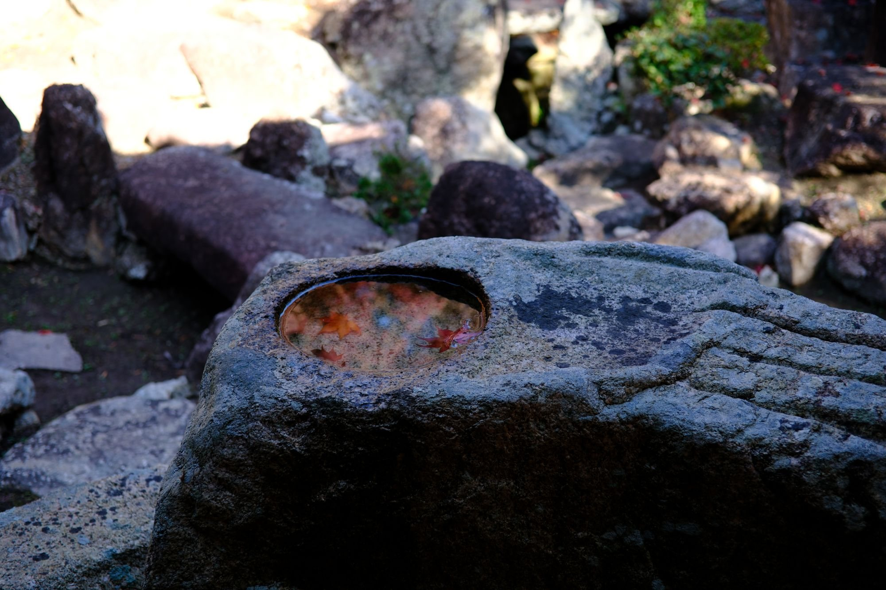
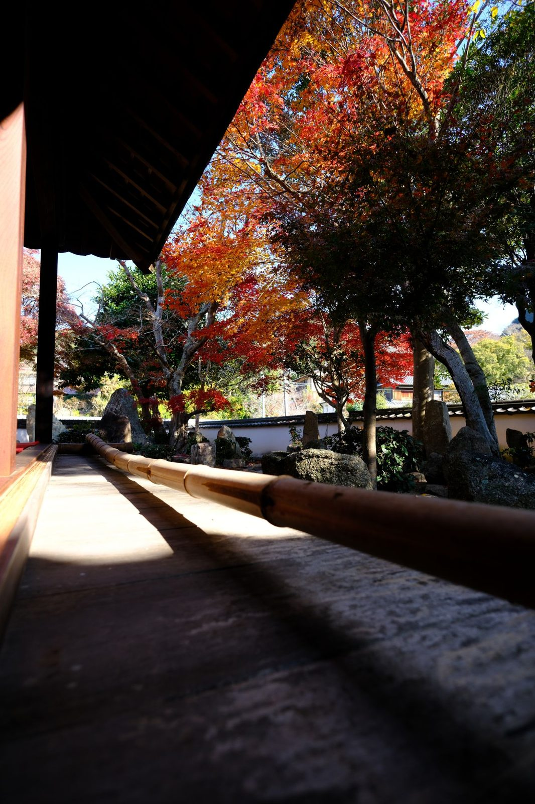
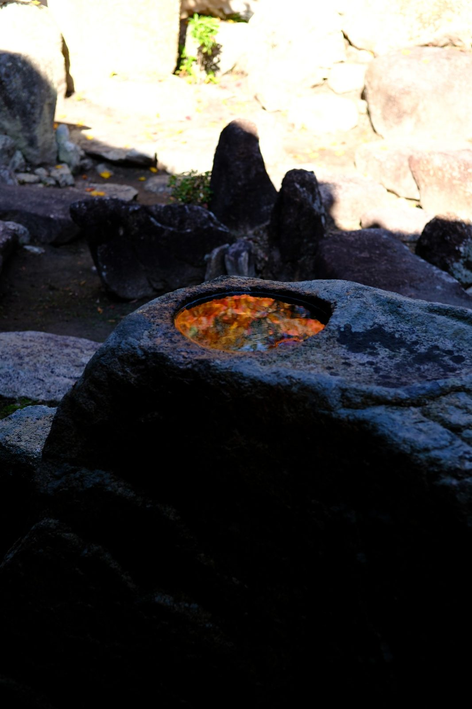
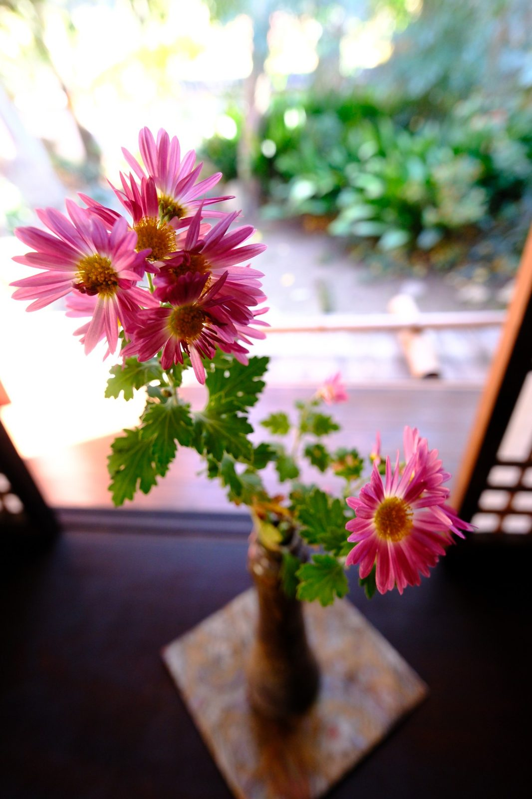

蓬莱石と鶴・亀
まず目に入る正面の花崗岩の巨石が蓬莱石です。左の細長い立石とともに亀石組を兼ね、右手の円錐形の立石は鶴の羽を象徴的にあらわしています。

国指定名勝 安養院庭園
石に聴く、
四百年の静けさ。
About
安養院（あんよういん）は、明石川の支流・伊川沿いに伽藍を構える天台宗の古刹、太山寺（たいさんじ）の塔頭寺院です。
太山寺は霊亀2年（716年）、定恵上人（藤原鎌足の子）の創建、藤原宇合（藤原不比等の子）の建立と伝えられます。南北朝期には播磨の一大法城として僧兵を養い、最盛期には四十一の院坊が甍を並べました。国宝の本堂（永仁年間・1293〜99年の再建）や仁王門が、往時のなごりを今に伝えています。
安養院は、現在に残る五院坊の一院です。書院の前には、八葉蓮華と賛えられる三身山を借景として安土桃山時代に作庭された枯山水が広がり、「安養院庭園」として国の名勝に指定されています。
Garden
国指定名勝・枯池式枯山水
蓬莱神仙思想を豪壮な石組みで表現した、書院の前庭です。面積は235平方メートル（約71坪）。大海のかなたに仙人の住む蓬莱の島々があり、不老不死の仙薬を蔵するという古来の思想を根本として、自然を写すのではなく、自然を乗り越えた神仙の世界を創り出しています。



まず目に入る正面の花崗岩の巨石が蓬莱石です。左の細長い立石とともに亀石組を兼ね、右手の円錐形の立石は鶴の羽を象徴的にあらわしています。
中央の石橋の奥と池の三ヵ所に枯滝を配します。板状の立石を弓状に四ヵ所に立てた遠山石は、遠い山から流れ出た水がやがて滝となるさまを象徴し、日本庭園の中でも特異な存在です。
本庭最大の特色が、石橋の手前にある洞窟石組。神仙の住む洞窟をあらわし、その上に石橋が見える構成です。下部を渓谷風に仕立て、いっそう神秘性を深めています。
神戸市北区にあった江戸時代中期築の茅葺民家二棟を移築し、連結したもの。景色に溶け込み、静かなたたずまいをみせています。三身山の原生林を借景とした庭園を一望できます。
書院の前にある珍しい手水鉢。手形が彫られており、水を手の中央に流すと、人差し指と中指の間から流れて岩の裏へ抜けます。
太山寺仁王門から中門へ向かう参道を歩いて五分ほど、右手に安養院の表門があります。
季刊「兵庫」創刊号 西桂先生の文章より抜粋構成させていただきました。
Special Opening
令和八年 秋季特別公開
※ 日程・時間は天候や行事により変更となる場合があります。
お問い合わせ：安養院 078-974-0408
Visit
庭園は通常非公開です。例年、春（ゴールデンウィーク頃）と秋（11月下旬の紅葉の頃）の年2回、特別公開を行っており、期間中はどなたでも拝観いただけます。
Access
〒651-2108
兵庫県神戸市西区伊川谷町前開258
「太山寺」バス停のすぐ前に太山寺仁王門があります。仁王門から中門へ向かう参道を徒歩5分、右手が安養院の表門です。
English
An’yō-in is a Tendai Buddhist temple in Nishi-ku, Kobe, founded as a sub-temple (tatchū) of Taisan-ji. Its dry landscape garden (karesansui), completed in the Azuchi–Momoyama period, has been a nationally designated Place of Scenic Beauty since 1980.
The garden is normally closed and opens to the public only for short periods in spring and autumn. Autumn 2026: November 24–30, 10:00–16:00, admission 300 yen (elementary school age and older), no reservation required.
Access: 7 minutes by Shinki Bus (route 14) from Ikawadani Station on the Kobe Municipal Subway to the “Taisan-ji” stop, then a 5-minute walk along the temple approach.